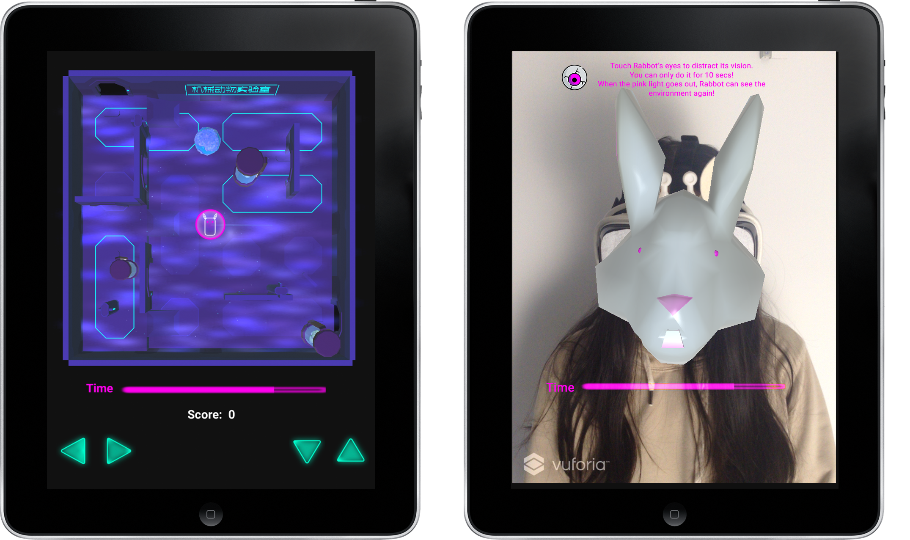
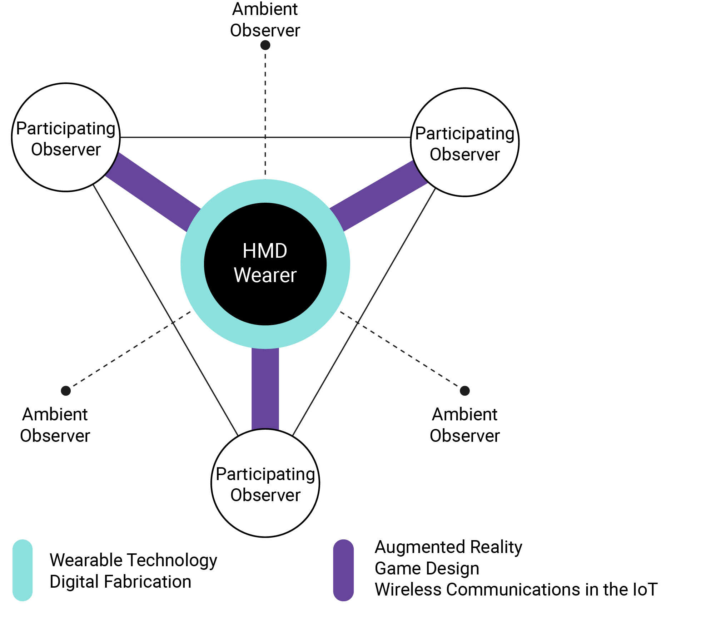
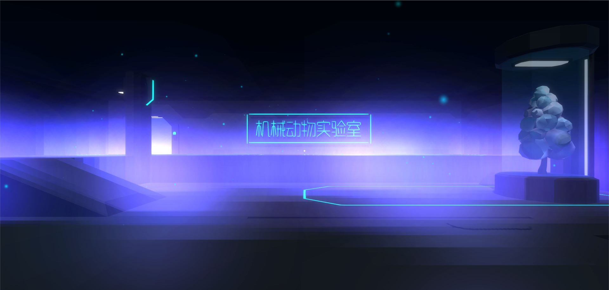
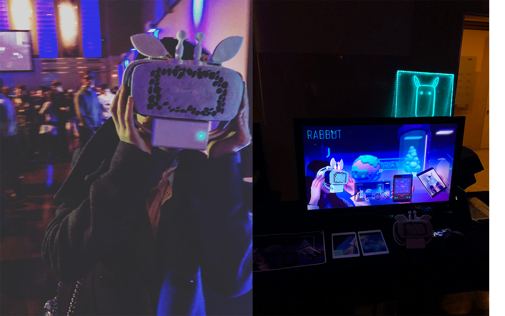
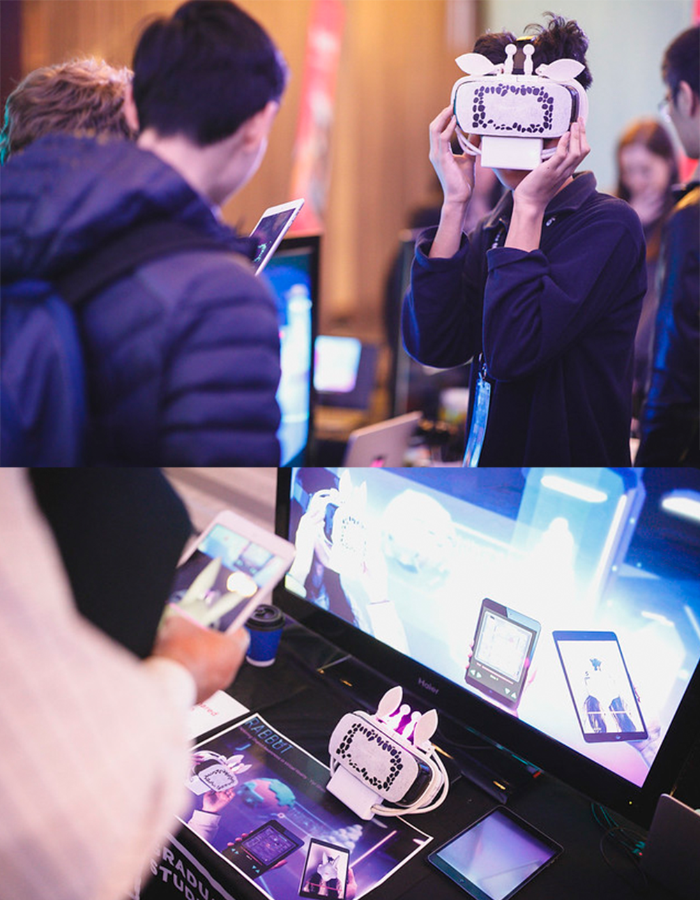
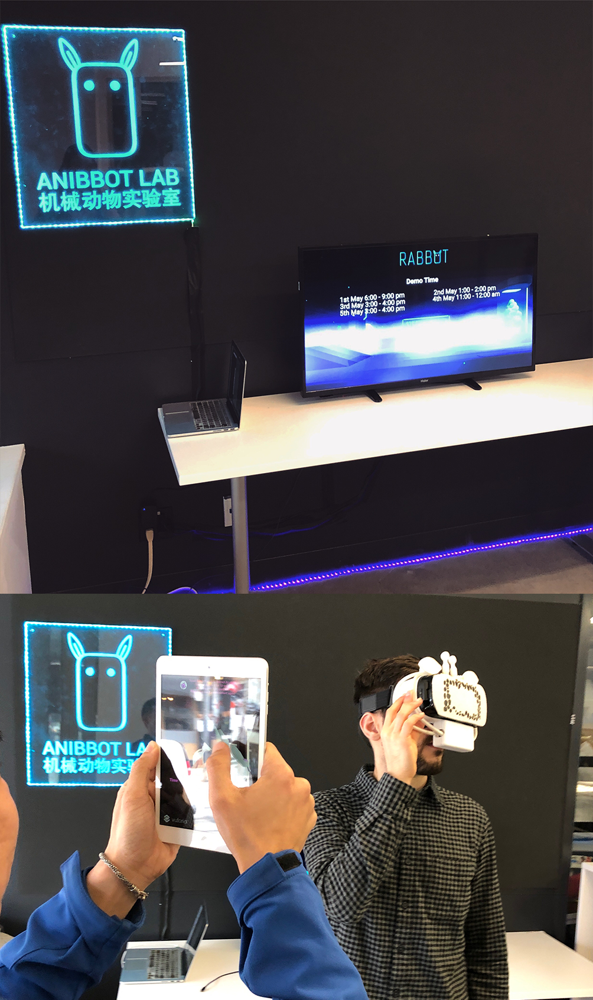
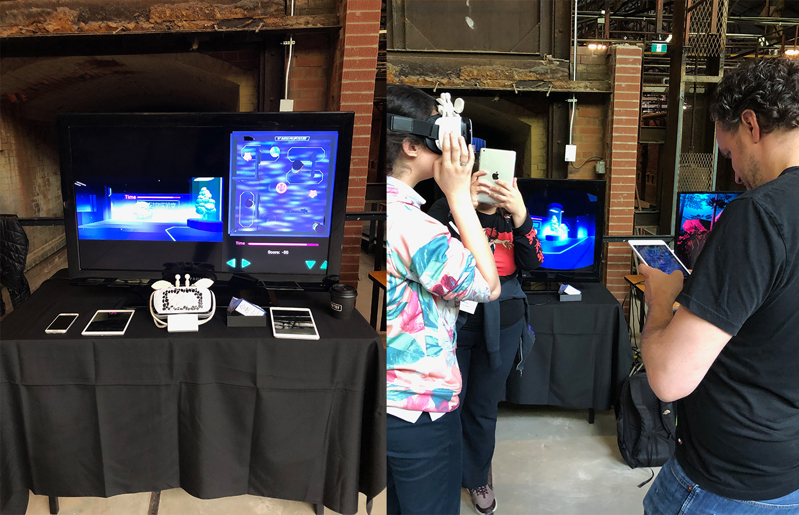

RABBOT
Created for iPads, Andriod phones and Gear VR using Unity3D, Node.js, Socket.IO, Particle API, OculusVR, Vuforia, Blender, Adobe Illustrator, Particle Photon, 3D printing and Laser cutting
Summary


This thesis project explores the possibilities of generating shared awareness in a virtual reality (VR) experience between a head-mounted display (HMD) wearer and other observers in the same physical space by merging wearable technology, augmented reality, asymmetric game design and wireless communications in the internet of things (IoT). The final outcome of this thesis project, RABBOT, features a modified VR head-mounted display and three-player asymmetric mobile game experiences with an embedded communication system to create opportunities for shared awareness amongst players. In the game, the participating observers can play cooperatively as Scientists to against the HMD wearer who is playing the Rabbot. Overall this thesis project argues that an engaging VR experience should not focus exclusively on the HMD wearer but also include other audiences to address and engage the relationships and interactions between them.
Full thesis paper can be found at here
Objective
The isolating design of virtual reality (VR) head-mounted displays (HMD) is typical in the single-player experience - immersing one into a virtual environment. This often creates a situation in which only one headset is available but no opportunities for engagement are made accessible for other people nearby. This isolation in VR cuts off social connections and awareness between the virtual world and physical world, between the HMD wearers and other observers. Additionally, the current offerings in the consumer electronics market of the head-mounted display have a dull appearance, which also shows the lack of attention in terms of design for other audiences.
This thesis is designed to address this problem and to explore the possibilities of generating shared awareness in a VR experience between the HMD wearer and other observers in the same physical space by merging wearable technology, augmented reality, asymmetric game design and wireless communications in the Internet of Things (IoT). The principal objective of my thesis project is to argue that an engaging VR experience need not solely focus on the HMD wearer but also other third-party audiences, whether these are participating observers or ambient observers.
Action
1.Roadmap
Project management for both written document and prototype making.

2.Concenptual Framework
A diagram to define possible users, solutions and relationships among them.
3.Prototype Map
I made four iterative prototypes and extracted useful approaches after evalutions.

3.System Overview

3.Workflow

4.Colors & Typography

5.Branding & UI


Exhibits

What the Futures?
Toronto Media Arts Centre, April 2019
LevelUp
Design Exchange, April 2019
FITC
Hilton Toronto, April 2019
GradEX
OCAD University, May 2019
Future Education Festival
Evergreen Brick Works, May 2019